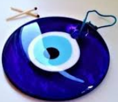

Ловець снів
Ловець снів-талісман, який використовували північноамериканські індіанці для захисту від темних духів під час сну. Також цей оберіг використовували в ритуалах і сибірськi шамани. Амулет оберігає сплячих вiд неприємних сновидінь і залишає тільки хороші сни. Завдяки цьому людина спокійно спить всю ніч, вiдпочиває як слід і запасається силами для нового дня. Крiм прямого призначення ловець снів може стати оригінальною прикрасою кімнати, в якості приємноï деталі з яскравим етнічним характером.Підвіска-маятник
Підвіска-маятник для біолокації з рожевого кварцу можна використовувати як повноцінний маятник, і як сильний талісман, і просто, як гарний кулон. Рожевий кварц за своїми природними властивостями здатний як накопичувати позитивну енергетику, а й передавати її власнику. Просто незамінний під час роботи у передбачуваних техніках, таких як Таро, Ленорман та іншими оракулами. Допомагає максимально точно зчитувати інформацію.Маятник Ньютона
Маятник або колиска Ньютона - механічна наукова система, створена в мініатюрі, що отримала назву на честь Ісаака Ньютона. Вона призначена для наочної демонстрації переходу одного виду енергії до іншої: потенційної в кінетичну і назад. У народі такий маятник називають вічним двигуном. І справді, за умови відсутності будь-якої протидіючої сили він міг би рухатися нескінченно. Однак у реальному житті цього досягти неможливо.
